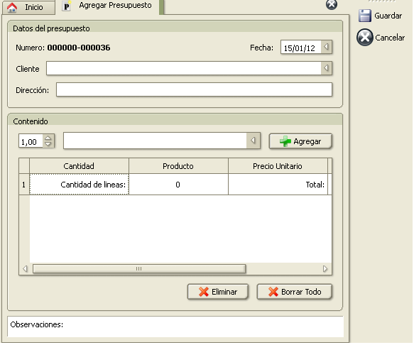

Presupuestos
El sistema le permite generar nuevos presupuestos para sus clientes y para clientes nuevos o que no desee ingresarlos en el sistema.
Cada presupuesto tendrá una numeración única y esta permitirá identificarlo sin problemas.
Nuevo presupuesto
Para acceder a la función de agregar un presupuesto puede hacerlo desde el menú Herramientas -> Presupuestos -> Nuevo presupuesto, o desde la pantalla inicial utilizando el botón correspondiente.
Al ingresar podrá ver una pantalla como la siguiente:

Los datos que aparecerán son los siguientes:
- Número: Numero de presupuesto que se emitirá cuando se guarde. Este será impreso en el presupuesto o deberá coincidir con la numeración que tengan los presupuestos pre-impresos.
- Fecha: Fecha de emisión que tendrá el presupuesto. Puede seleccionar la fecha desde el calendario desplegable que aparecerá al hacer click sobre la fecha lateral que existe sobre la derecha.
- Cliente: En esta listra desplegable existen varias opciónes.
- Puede ingresar el numero de cliente y al hacer click, se cargarán los datos del cliente si el número de cliente existe.
- Puede buscar un cliente ingresando parte del nombre, razón soical o apellido y en la lista desplegable se mostrarán todas las coincidencias posibles de las cuales podrá elegir.
- Puede ingresar cualquier texto que desee aunque no se encuentre en su listado de clientes.
- Dirección: Este campo será rellenado automaticamente cuando seleccione un cliente válido en el campo de “cliente”. Si no es un cliente que exista en la base de datos, podrá ingresar una dirección para el presupuesto.
- Productos: Esta sección contendrá todos los ítems que conformarán el presupuesto.
- Como ingresar un item: Los primeros elementos que hay antes de la lista están referenciados de la siguiente manera:
- El primer elemento hace referencia a la cantidad del item que se ingresará. De manera predeterminada contendrá el valor 1 ( una unidad).
- El segundo elemento le permitirá ingresar el texto del ítem. En este caso se puede ingresar un código de producto y al presionar enter, se cargara el producto con su correspondiente precio de venta en el listado ingerior. También se puede ingresar parte del nombre de un producto y la lista desplegable mostrará las posibles coincidencias que existe. De esta lista podrá seleccionar la que desea y al presionar enter, se agregará al listado de items con su corespondiente precio de venta. También podrá ingresar un texto cualquiera como item, aunque este no corresponda con ningun producto y al presionar enter para confirmar el item, aparecerá una ventana que le solicitará el precio unitario del producto. Si cancela cuadro de dialogo el item no se agregará. Al aceptar el dialogo, el item será agregado al listado de items con el precio ingresado.
- La lista de items calcula automaticamente los subtotales y el total final del presupuesto. Los elementos que se pueden editar de este listado son el precio unitario de cada item y la cantidad. Para editar alguno de estos items, posicionese sobre el item y presione F2 o haga doble click para editarlo. Para confirmar el cambio, presione enter. Esto provocará que automaticamente se ajusten los sutotales y el total general.
- Puede borrar un item de la lista seleccionandoló y utilizando el botón “borrar”. Se le solicitará confirmación de que desea eliminar el item.
- Puede borrar todos los elementos en la lista de items del presupuesto utilizando el botón de “Borrar todo”.
- Observaciones: Le permitirá ingresar notas en el presupuesto que aparecerán al final de este.
Para guardar el presupuesto y mandarlo a imprimir utilice la opción de guardar. Esto guardará todos los datos del presupuesto y lo enviará a imprimir, presentándole la ventana de impresión.
Si no desea guardar el presupuesto, utilice la acción de cerrar.
 Presupuestos anteriores.
Presupuestos anteriores.
Para ver los presupuestos emitidos anteriormente, utilice la opción de menú Herramientas -> Presupuestos -> Presupuestos anteriores.
Allí aparecerá un listado como el siguiente:
<Agregar imagen>
En este listado podrá ver los siguientes datos:
- Número de serie: Numero identificador del presupuesto.
- Destinatario: Cliente o persona a la cual fue destinado el presupuesto.
- Total: Total presupuestado.
- Fecha: Fecha en que fue emitido el presupuesto.
Dentro de las acciones que se encuentran disponibles son las siguientes:
 Agregar
Agregar
Esta acción abrirá la misma ventana que la opción del menu de “Nuevo presupuesto”.
 Eliminar
Eliminar
Esta acción le permitirá eliminar el presupuesto que se encuentre seleccionado.
Esta acción no afectará la numeración ya existente.
 Imprimir
Imprimir
Esta acción le permitirá reimprimir un presupuesto ya emitido con anterioridad.
 PDF
PDF
Esta acción le permite generar un archivo PDF de los presupuestos que se encuentren seleccionados en la lista.